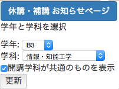
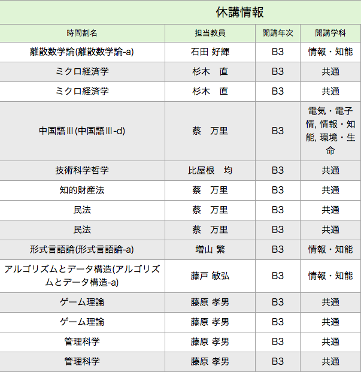

TuT休講・補講Viewer
概要
このChromeプラグインは豊橋技術科学大学の休講・補講情報のページを自分に関係のない情報を削除する事により見やすくするための大学非公式アプリです。
この見ずらい画面が。。。
自分の学年・学科を選択すると…

要らない情報が非表示に！

インストール方法
※ Google Chromeを使っている方のみ利用できます。
Chrome webストアの
TuT休講・補講Viewer
に移動します。
右上にある[Chrome に追加]をクリック。
ブラウザの右上にTuT休講・補講Viewerのアイコンが表示されたらインストール完了。
使い方
ブラウザ右上にあるTuT休講・補講Viewerのアイコンをクリック
[休講・補講 お知らせのページ] に移動します
もう一度、右上のアイコンをクリックして設定画面を開きます。
そこで、学年と学科を選択します。
最後に更新ボタンを押すと画面上から自分に関係のない情報が削除されます。
便利〜
注意事項
※大学非公式アプリです。
このアプリケーションの使用により生じたいかなる不利益に対しても制作者は一切の責任を負いません。使用者の責人においてご使用ください。
更新情報
v1.0.0
とりあえず機能を一通り実装して公開
1.0.1
iconデータの画像サイズを修正
1.1.0
休講・補講ページへのリンクを追加
デフォルトで共通科目のチェックが入っていない問題を解消
開発時，ログ出力を削除
制作者情報
製作者
たくのこ(TuT 2016年度 B3 3系)
Twitter
@takunokko
ソースコード(GitHub)
TuT_lec_can